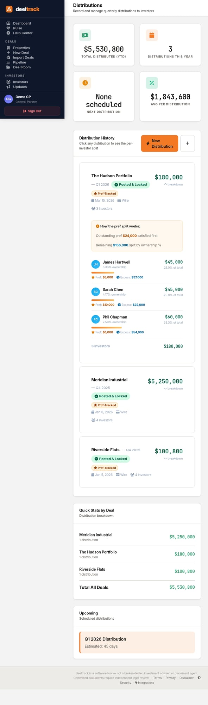

Waterfall Distributions: Automated Pref Tracking & One-Click Posting

If you've ever distributed cash to investors using a spreadsheet, you know the drill: calculate the preferred return for each LP based on their commitment date, figure out the GP catch-up, split the residual by ownership percentage, triple-check the math, email each investor individually, then pray you didn't make a mistake.
deeltrack's Distribution Command Center replaces that entire workflow with three steps: select a deal, enter the amount, and click "Post."
How Waterfall Distributions Work
A waterfall structure defines how cash flows from a deal get split between Limited Partners (LPs) and the General Partner (GP). The name comes from the way money "falls" through tiers — each tier must be satisfied before the next one gets funded.
| Tier | What Happens | Who Gets Paid |
|---|---|---|
| 1. Return of Capital | Investors get their original investment back | LPs only |
| 2. Preferred Return | LPs receive a guaranteed annual return (typically 6-10%) on unreturned capital | LPs only |
| 3. GP Catch-Up | GP receives distributions until they've "caught up" to their promote percentage | GP only |
| 4. Residual Split | Remaining profits split by agreed ratio (e.g., 70/30 or 80/20 LP/GP) | Both |
The tricky part isn't understanding the tiers — it's calculating them correctly when you have:
- Multiple investors with different commitment dates (pref clock starts at each capital call)
- Accrued but unpaid preferred returns from prior periods
- Different ownership percentages per investor
- A mix of periodic distributions and special distributions
This is where spreadsheets break — and where deeltrack's waterfall engine takes over.
How deeltrack Handles It
Step 1: Select a Deal & Enter the Amount
Choose the deal from your portfolio and enter the total amount you want to distribute. deeltrack pulls in every investor linked to that deal, their commitment amounts, ownership percentages, and — critically — their pref accrual history.
If Investor A committed $500K on January 1 and Investor B committed $300K on March 15, their preferred return accrual is different even at the same pref rate. deeltrack tracks this per-investor, per-period, automatically.
Step 2: Review the Per-Investor Breakdown
Before any money moves, deeltrack generates a complete pro-forma distribution ledger showing:
- Each investor's preferred return owed — calculated from their capital call date, not the deal close date
- Pref satisfied vs. remaining — how much of the pref has been paid in prior distributions
- Excess allocation — their share of profits above the pref hurdle
- Total payout — the exact dollar amount each investor receives
- GP promote — calculated after all LP prefs are satisfied
You can review the entire breakdown, see the waterfall tier summary (how much went to pref, catch-up, and residual), and verify the GP promote — all before posting anything.
Step 3: Post to Ledger
When everything looks right, click "Post Distribution to Ledger." deeltrack:
- Locks the distribution record (no edits after posting)
- Updates each investor's capital account
- Records the pref accrual state for the next distribution
- Generates distribution notices ready to send
- Updates the distribution history timeline
Draft vs. Posted: The Safety Net
Every distribution starts as a draft. You can preview, adjust, recalculate as many times as you need. Only when you explicitly click "Post" does it become permanent.
This matters because distribution errors are expensive — not just financially, but in investor trust. Once an LP sees the wrong number in their portal, the damage is done even if you correct it immediately.
Distribution Types
deeltrack handles three types of distributions, each with different waterfall implications:
- Periodic (Cash Flow) — Regular quarterly or monthly distributions from operating income. Typically goes to pref first.
- Exit / Disposition — Proceeds from selling the property. Triggers return of capital + full waterfall.
- Refinance Proceeds — Cash-out from a refinance. Treated differently depending on your OA terms.
Wire Report & Payment Tracking
After posting, deeltrack generates a wire report with each investor's bank details (routing, account number, bank name) alongside their distribution amount. This is the document you hand to your bank or ACH processor to execute the payments.
If an investor hasn't provided banking details yet, deeltrack flags them — so you don't discover the problem after you've already announced the distribution.
What Makes This Different
Most investor management platforms handle distributions as a simple "enter amounts per investor" table. You're doing the math yourself and just recording the result.
deeltrack actually calculates the waterfall. It knows the pref rate, the promote structure, each investor's basis, and the accrual history. You enter a single dollar amount and the engine splits it correctly across every tier for every investor.
The waterfall math in deeltrack was built by someone who's actually prepared distribution calculations for real syndications — not a developer who read a blog post about preferred returns. The edge cases (partial pref satisfaction, mid-period capital calls, multi-tier promote structures) are all handled.
Frequently Asked Questions
What if my OA has a non-standard waterfall?
deeltrack supports the most common structures: simple pref + promote, multi-tier waterfalls, and catch-up provisions. If you have a unique structure, the default split can be manually adjusted per distribution.
Can I modify a posted distribution?
No — and that's by design. Posted distributions are immutable for audit trail purposes. If you need to make a correction, you'd post an adjustment distribution (just like you would in real accounting).
Does it handle multiple deals simultaneously?
Each distribution is per-deal. If you're distributing from multiple properties, you'd post each one separately. This keeps the capital accounts clean and the audit trail deal-specific.
Stop doing waterfall math in spreadsheets.
$49/deal/month. All features included. No AUM fees.
Get Started Free →